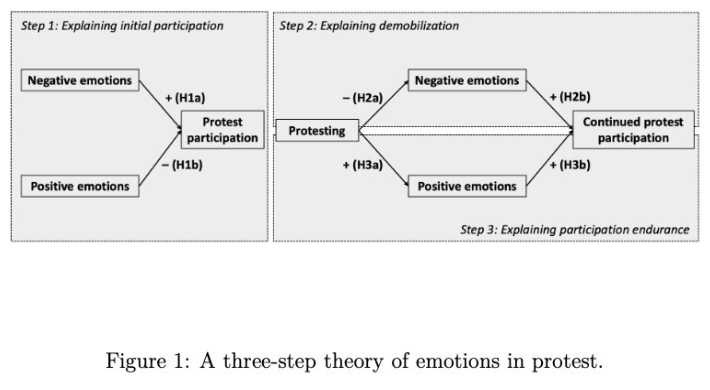

Mode of Hope
It is a radical act to believe change is possible?
Politically hope comes about during collective resistance (like a protest), as well as resistance itself becoming hope. Hope leading to resistance and resistance also leading to hope
Leuschner and Versteegen 2023 study on the relationship between (positive emotion) hope and protesting: hope isn’t just generated in protests and resistance, it also sustains and builds momentum of the resistance.
defiance against entropy and decay
Zapatistas 1994: “A new lie is being sold to us as history. The lie of the defeat of hope, the lie of the defeat of dignity, the lie of the defeat of humanity…. In place of humanity, they offer us the stock market index. In place of dignity, the offer us the globalization of misery. In place of hope, they offer us emptiness. In place of life, they offer us an International of Terror. Against the International of Terror that neoliberalism represents, we must raise an International of Hope. Unity, beyond borders, languages, colors, cultures, sexes, strategies and thoughts, of all those who prefer a living humanity. The Iinternational of Hope. Not the bureaucracy of hope, not an image inverse to, and thus similar to, what is annihilating us. Not power with a new sign or new clothes. A flower, yes, that flower of hope.” through Rebecca Solnit “Hope in the Dark”
Staying hopeful in a system that feeds on hopeless motionless minds. I demand a better future (David Bowie, A better Future remix by air)
